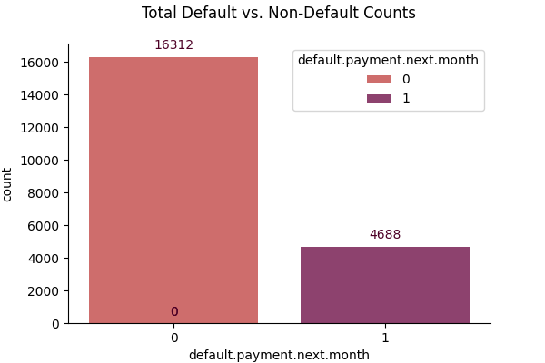
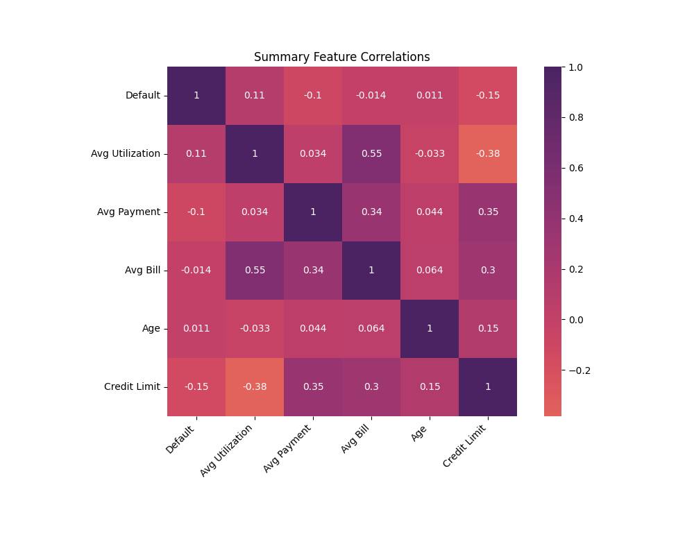
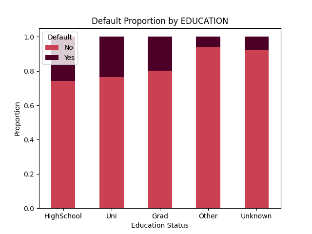

Loan Default Prediction
Enter client data to assess risk using our trained model.
Result: --
Explore Data Insights

Visualizing the balance between default (1) and non-default (0) cases.

How do credit limits and average bill amounts interact with default risk?

Proportion of defaults across different education levels.

Distribution of credit limits for each target class.
SHAP
Behind the Prediction
Before modeling, EDA and Feature Engineering was performed. This also transformed raw financial records into features like average utilization and payment proportion ratios.
make_column_transformer to scale numeric features and
encode categories, ensuring the model can generalize beyond the training examples.
Established a DummyClassifier baseline to measure our performance. Then, conducted a comparative analysis of Logistic Regression, SVC, Random Forest, and KNN.
cross-validation. Both
high mean_test_score and a low std_test_score were prioritized to ensure stable
performance across all folds.
To maximize efficiency, used Recursive Feature Elimination (RFE) to reduce noise.
Then ran Hyperparameter Optimization (Grid and Random Search) to find the ideal settings for the top-performing model.
Through iterative testing, peak Random Forest accuracy was 0.8107.
By converting LIMIT_BAL to a numeric feature and tuning min_samples_leaf, the
model's stability across RFE folds improved.
Top Model Performance:
• Random Forest: 0.8107
• KNN: 0.7888
• SVM: 0.7719
• Logistic Regression: 0.7089
Top-Performing Model:
Random Forest
Random Forest proved most effective for credit risk assessment, delivering a ~14% accuracy gain over the Logistic Regression baseline.